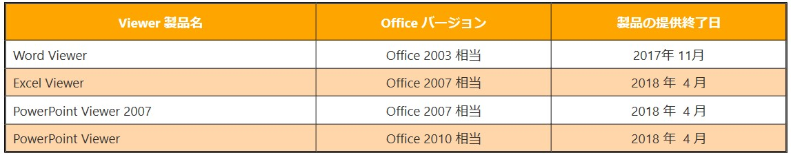

(※ 2017 年 9 月 4 日に Japan Office Support Blog に公開した情報のアーカイブです。)
こんにちは、Office サポート チームです。
本記事では、Office Viewer 製品の提供終了についてご案内いたします。
2017/12/22 Update
Office Viewer 製品提供終了アナウンス公開に伴い、内容を改定しました。
2018/5/2 Update
Office Viewer 製品提供終了に伴い、各ダウンロードサイトへのリンクを削除し、内容を改定しました。
Office Viewer の提供終了について
米国の弊社開発チームの Blog サイトにも 記載がありますが、Word Viewer は 2017 年 11 月に Web サイトでのダウンロード提供を終了しました。
また、Word 以外の Office Viewer (Excel Viewer / PowerPoint Viewer) 製品においても、2018 年 4 月に Web サイトでのダウンロード提供を終了しました。
タイトル : Word Viewer to be retired in November, 2017
タイトル : End of support for the Excel and PowerPoint viewers and the Office Compatibility Pack
各 Viewer 製品の代わりとなるアプリケーションにつきましては、ダウンロードサイトの詳細項目に記載されていました。
内容を抜粋して転記しますので、ご参照ください。
※Excel Viewer / Word Viewer についても Viewer 製品の代わりのアプリケーションは以下と同様の考えとなります。
PowerPoint Viewer の詳細項目より抜粋
-———–<抜粋 ここから>————-
注: Microsoft PowerPoint Viewer は、2018 年 4 月で廃止されます。その時点で、Viewer はダウンロードで入手できなくなり、セキュリティ更新プログラムを受け取ることもなくなります。Microsoft では、PowerPoint ファイルを表示するために、次のアプリケーションを使用することお勧めします。
- Windows 10 を搭載した PC で、無料の PowerPoint Mobile アプリケーションを Windows ストアからダウンロードする
- iOS を搭載したデバイスで、Apple Store から無料の PowerPoint for iOS アプリケーションをダウンロードする
- Android を搭載したデバイスで、Google Play ストアから無料の PowerPoint for Android アプリケーションをダウンロードする
- 1 か月間無料で Office 365 を試してください。これにより、フル バージョンの Word、Excel、PowerPoint、Outlook などにアクセスすることができ、最大 5 台の PC または Mac、さらに最大 5 台のタブレットと最大 5 台のスマートフォンにインストールすることができます。
- Windows 7 または Windows 8/8.1 PC で、ファイルを OneDrive にアップロードし、PowerPoint Online を使用して無料で表示する
-———–<抜粋 ここまで>————-
Office Viewer 製品について
各 Office Viewer は既に提供を終了しております。
緊急度の高い案件を除き、セキュリティ更新プログラムは提供されません。
※PowerPoint Viewer は Office 2010 相当のバージョンとはなりますが、既に提供を終了しており、セキュリティ更新プログラムは提供されません。
Office Viewer 製品がどの Office のバージョン相当の製品であるかと提供終了日の簡単な早見表は以下となります。

– 注意事項 本情報の内容 (添付文書、リンク先などを含む) は作成日時点でのものであり、予告なく変更される場合があります。